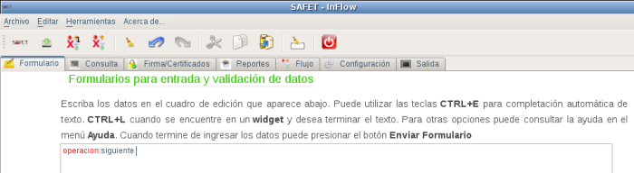
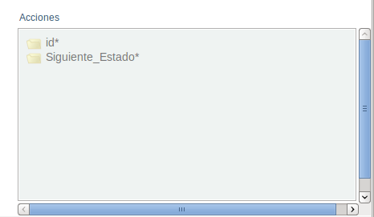
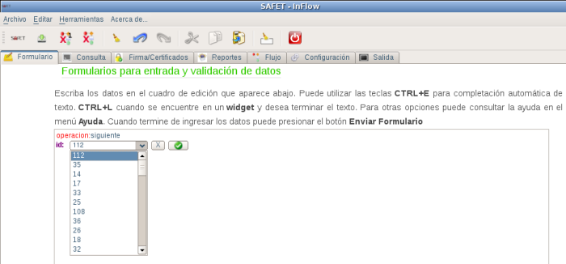
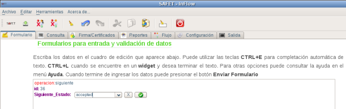

12.3.4.- Operación:siguiente:
Esta operación permite cambiar el estado en que se encuentra un ticket, para realizar esta operación se requiere hacer click sobre operacion:siguiente del menú inteligente y en el área de cuadro de edición debe aparecer la linea de texto operacion:siguiente, (ver figura S3.1.4-1) aparte debe aparecer el menú inteligente con los campos relacionadas con esta operación (ver figura S3.1.4-2)

Figura S3.1.4-1. Área cuadro de edición selección de la operacion:siguiente

Figura S3.1.4-2. Menú inteligente, operación siguiente
Se debe conocer el id del ticket al que se le va a cambiar el estado en que se encuentra (ejemplo del estado nuevo al estado aceptado), se procede haciendo click sobre el campo
id* del menú inteligente (ver figura S3.1.4-3), luego de seleccionar el id y aceptado el id (hacer click en el botón

), se hace click sobre el campo
Siguiente_Estado del menú inteligente y debe aparece en el cuadro de edición la linea de texto
Siguiente_Estado: con un botón de selección que debería mostrar solo los estados siguiente al que puede pasar el ticket (ver figura S3.1.4-4), ejemplo de estado nuevo a estado aceptado.

Figura S3.1.4-3. Seleccionar el id del ticket que va a cambiar de estado

Figura S3.1.4-4. Selección del siguiente estado del ticket
Una vez seleccionado el nuevo estado del ticket, se procede a darle click al botón
Y luego se hace click en el botón enviar